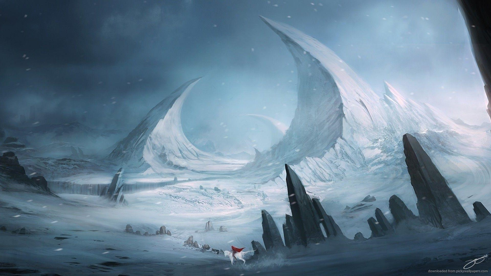

The Contours of Memories are Washed Away by the River of Time
Eleven years ago, the world became infested with void. The heroes, tasked to stop this catastrophe, lost, and the world was engulfed with darkness as the sun was destroyed. Now, the only light that is left are the scattered fragments of the moon still left in the sky.